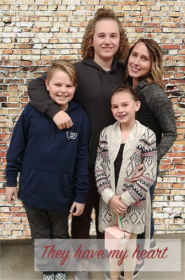

Hello!!
Welcome to my page! I'm an Instructional Technology Trainer for Utah Education Network. I'm passionate about helping teachers use the 4Cs in the classroom by implementing digital portfolios and Breakout EDU immersive learning games. I enjoy working with teachers to effectively use Canvas and Utah's Online Library and I'm the state's expert for the college and career planning website, UtahFutures.org. I have a Bachelor's degree in Marketing and I'm currently pursuing a Master's degree in Instructional Design and Educational Technology. Prior to joining UEN, I was a high school Business and Financial Literacy teacher.Personal Life
I love living in Utah! From skiing and snowshoeing in the winter, to hiking and paddle boarding in the summer...fresh air and sunshine calls my name! I'm mom to three awesome kiddos that love to play sports, dance, and keep me on my toes.
Portfolio
Logos made in Adobe Illustrator
User Persona for Human Computer Interaction Course

Photo edited in Adobe Photoshop
Short video made in Adobe Premier

Let's Connect!
801-888-8888
jgardner@uen.org
jgardner@uen.org